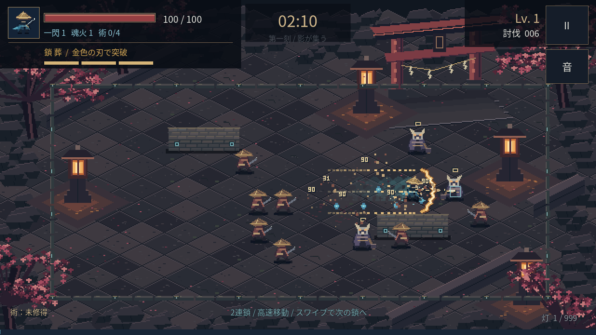

ANDROID / CHAIN RISK & REWARD / 0.4.0
朧火 OBOROBI
敵へ飛び込み、鎖火を溜める。
次の鎖で、金色の広い斬撃「鎖葬」を放つ。
約78MB · Android 7.0以降 · OpenGL ES 3.0対応端末
Godotのインストールは不要です。

インストール
- 上のボタンでAPKを保存します。アプリ内のブラウザで保存できない場合は、このページをChromeなどのブラウザで開いてください。
- スマホの「ファイル」アプリで、ダウンロードした Oborobi-Android.apk を開きます。
- インストール元の許可を求められた場合は、そのブラウザ／ファイルアプリについて「この提供元を許可」を有効にし、戻って「インストール」を押します。
- アプリ 「朧火」 を開き、「境内へ入る」をタップします。
0.1.1・0.2.0・0.3.0と同じ署名です。インストール済みの「朧火」に上書き更新できます。
遊び方
- 進みたい方向へ短くスワイプ。 指を離す前に鎖を射出します。
- 移動中も、一度指を離して次のスワイプへ。勢いを保って鎖をつなぎ直せます。
- 接続先は大きい鬼面・石垣・外周。小さい敵は鎖を遮らず、高速の鎖移動を止めません。
- 短くタップすると解除。 慣性で少し滑走します。刀と魂火は自動です。
- 魂を集め、3択から強化。最初のレベルアップでは新しい術を選べます。180秒生存でクリア、HP0で落命。結果から再挑戦できます。
鎖移動のリスクと報酬
- 敵のそばを高速で抜けると鎖火＋1、鬼面に到着すると＋2。 安全な壁移動や歩行では溜まりません。それぞれ同じ敵から一度だけ得られます。
- 鎖火が3つで、次の鎖が「鎖葬」に。 接続した時に力を使い、進路の広い範囲を金色の刃で切り抜けます。
- 被弾すると溜めた力を失います。 鎖をつながず4秒経った場合も消えます。停止・強化画面では保持時間も止まります。
敵へ飛び込み、もう一度つないで掃討するか。安全な場所へ逃げて仕切り直すか。鎖移動中すべてが無敵ではないため、敵の近くで止まる危険と強攻撃の報酬を試せます。
4つの術
残火の轍：走った道に蒼い炎。
雷渡り：3体をつなぐ白い雷。
三日月の輪：周囲を巡る3枚の刃。
彼岸の花：花びら状に広がる斬撃。
右上の停止ボタンやAndroidの「戻る」で一時停止。別のアプリへ切り替えた後は、再開ボタンを押してください。
署名・APK内容、Godot上の鎖火・鎖葬28項目・鎖36項目・術23項目・戦闘31項目・入力12シナリオを検証済み。Android端末上での0.4.0の起動・性能は未検証です。鎖移動のリスクと報酬を実機で試すための版です。